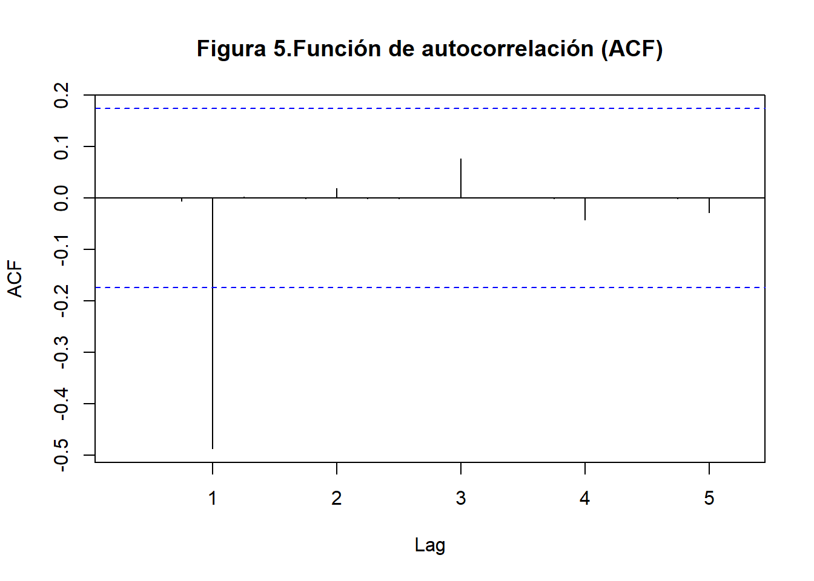
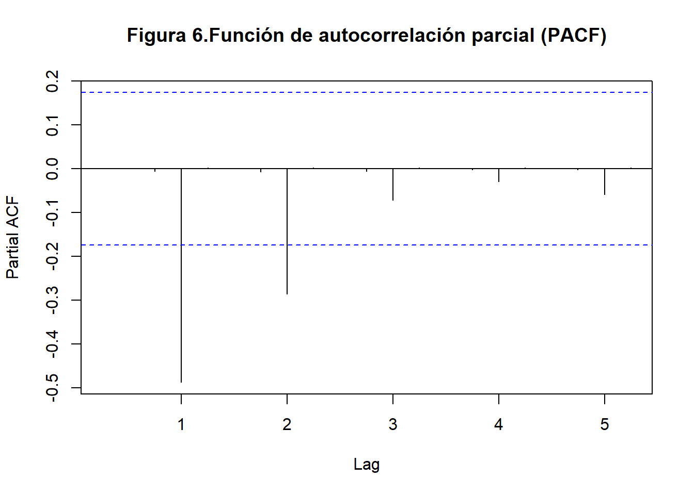
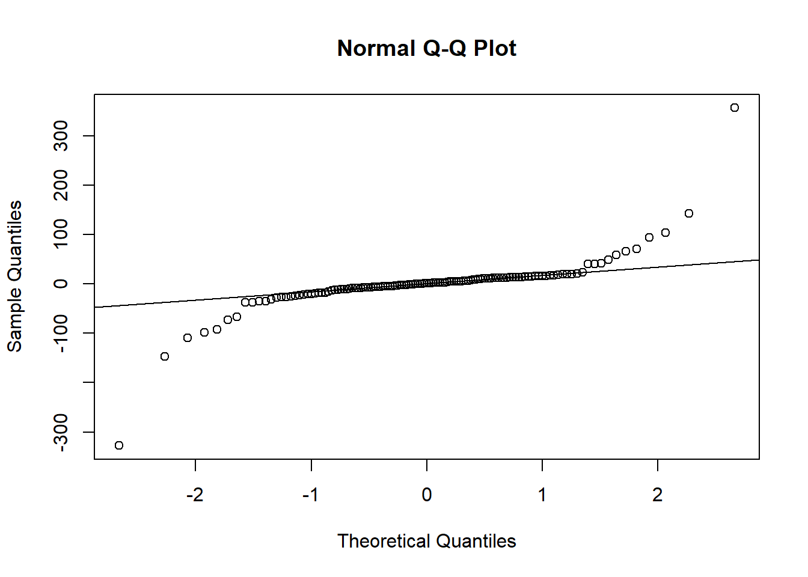

Chapter 6 Modelo Arima
Continuamos planteando nuestro siguiente modelo candidato, esta vez definiremos un modelo autorregresivo de promedio movil integrado, tambien conocido como modelo ARIMA.
Como primer paso, daremos un vistazo a las funciones de autocorrelacion completa (ACF) y parcial (PACF). Estas funciones miden la correlacion entre una serie de tiempo y sus valores retrasados, esto se hace para determinar el rango de los posibles valores p y q de nuestro modelo Arima.
NOTA: Recuerdese que la forma del modelo ARIMA es (p,d,q) con d = 2 el nivel de diferenciacion que sufrio nuestra serie de tiempo en pasos anteriores

Luego observamos en el grafico las lineas quesobrepasan el limite punteado horizontal, esto indica los primeros rezagos con una correlacion significativa, en este caso 0 y 1 luego esos son los valores que podria tomar q

Luego observamos en el grafico que los valores de p pueden ser 0,1 y 2
El siguiente paso seria probar las distintas combinaciones de los modelos arima para distintos valores de p y q que alternen en sus respectivos rangos, para despues escoger el que menor AIC y BIC tenga. Sin embargo, la funcion auto.arima directamente nos ayuda a seleccionar el mejor modelo de forma automatica
## Series: ST_TRIMESTRAL
## ARIMA(1,1,0)(2,0,0)[4] with drift
##
## Coefficients:
## ar1 sar1 sar2 drift
## 0.9122 -0.7417 -0.6696 54.4111
## s.e. 0.0364 0.0864 0.1145 21.6525
##
## sigma^2 = 3055: log likelihood = -696.26
## AIC=1402.52 AICc=1403.01 BIC=1416.78Aqui se muestra que en efecto hay dos modelos que cumplen la condicion anterior y que ademas poseen el mismo AIC y BIC(son practicamente el mismo): ARIMA(1,1,0) y ARIMA(2,0,0).
Como ultimo paso validamos que el modelo ARIMA tenga residuos de ruido blanco (no se correlacionan los errores), para esto aplicaremos la prueba de Ljung-Box

##
## Box-Ljung test
##
## data: residuales
## X-squared = 0.28388, df = 1, p-value = 0.5942H0: No hay autocorrelacion en los residuos H1: Hay autocorrelacion en los residuos
Como el valor P es mayor a 0.05, NO se rechaza H0, luego no se autocorrelacionan los errores e indica que efectivamente cumplen la condicion de ruido blanco
Como analisis adicional, aplicaremos la prueba shapiro para determinar si los residuos se distribuyen de manera normal o no lo hacen
##
## Shapiro-Wilk normality test
##
## data: residuales
## W = 0.62737, p-value < 2.2e-16H0: Los residuos siguen una distribucion normal H1: Los residuos NO siguen una distribucion normal
Como el valor P es menor a 0.05, se rechaza H0 y la muestra no sigue una distribucion normal